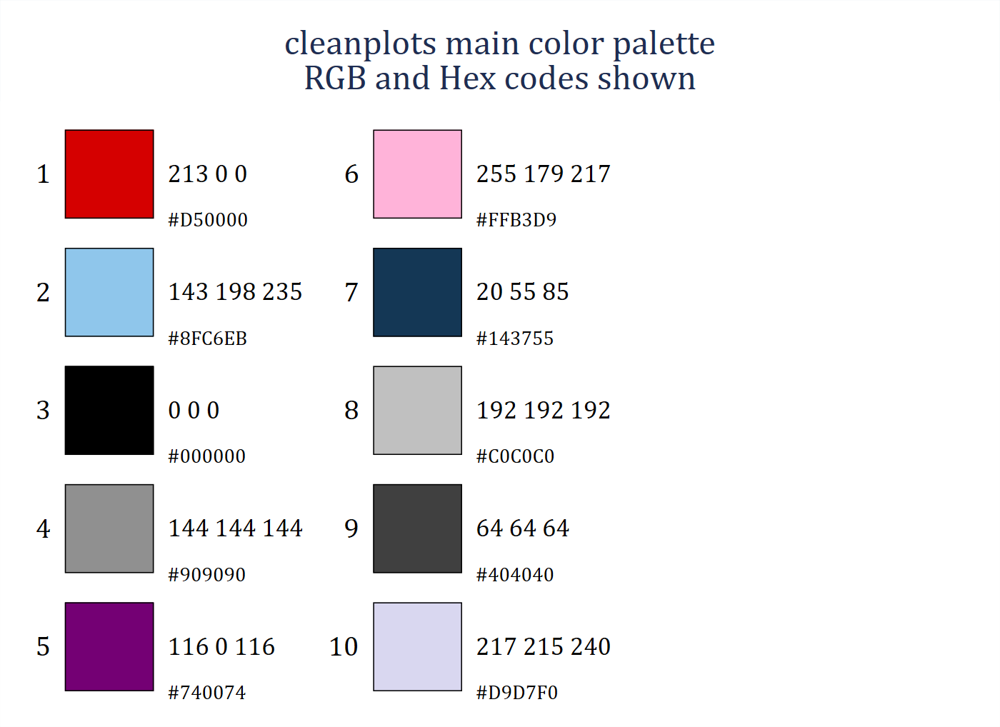
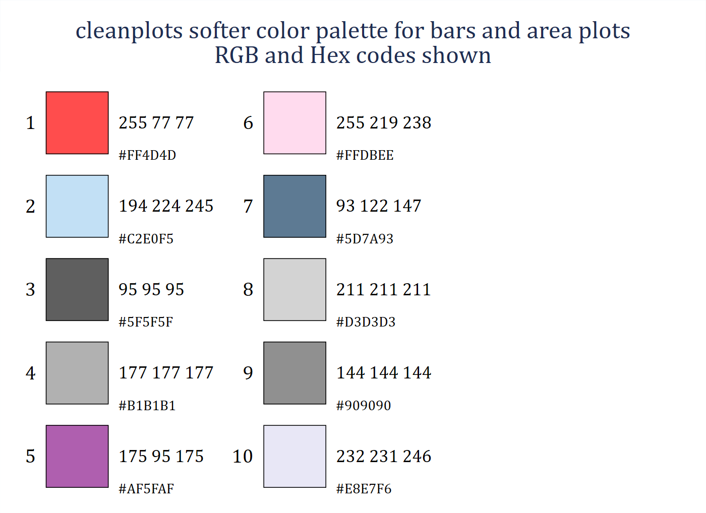
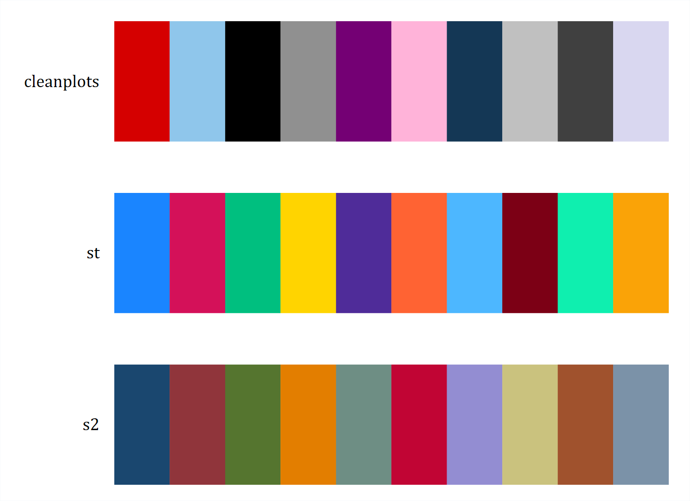
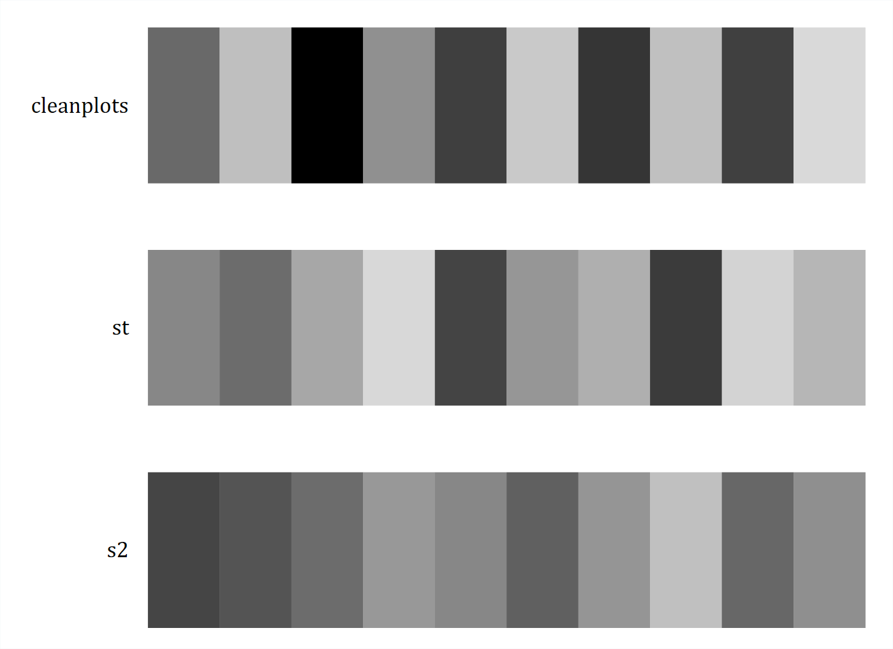
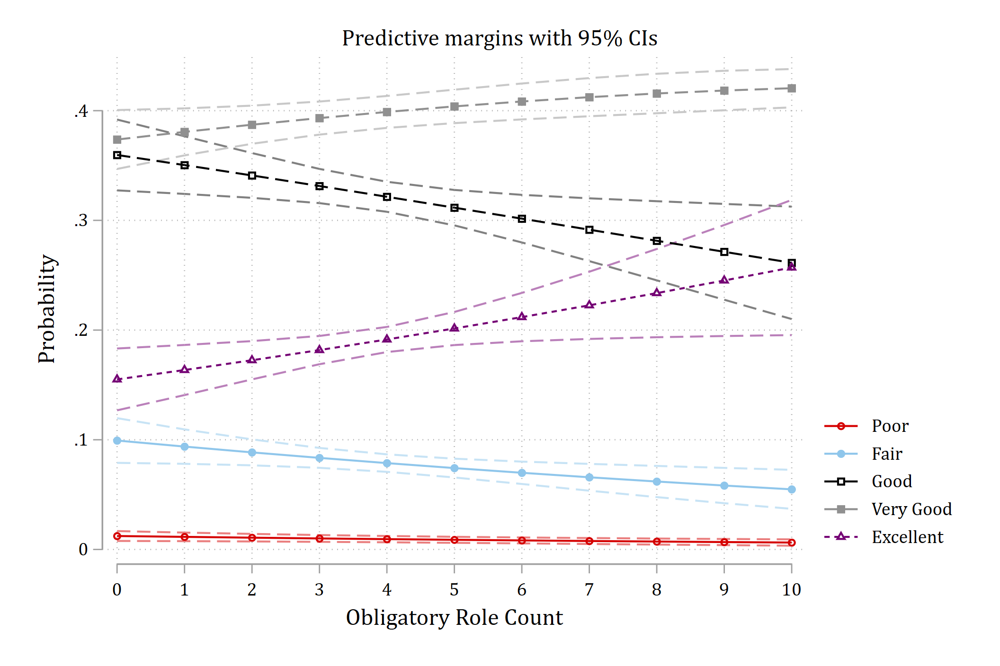
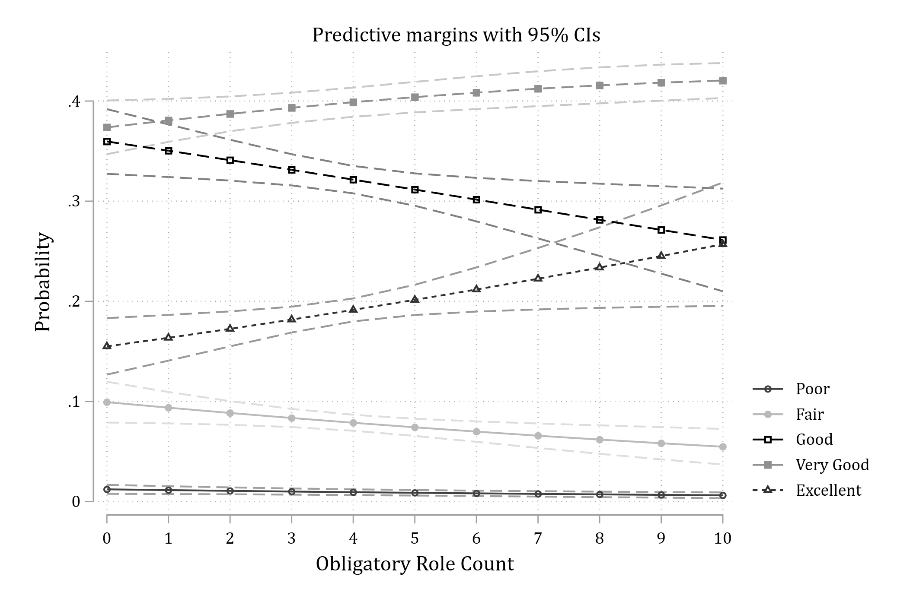
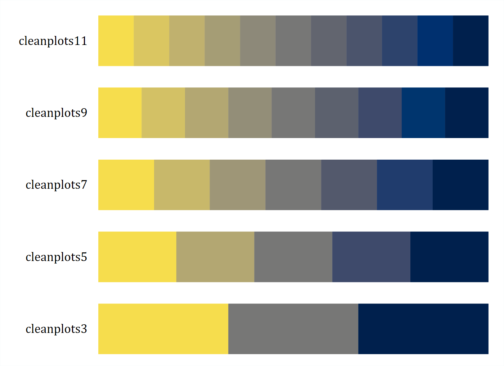
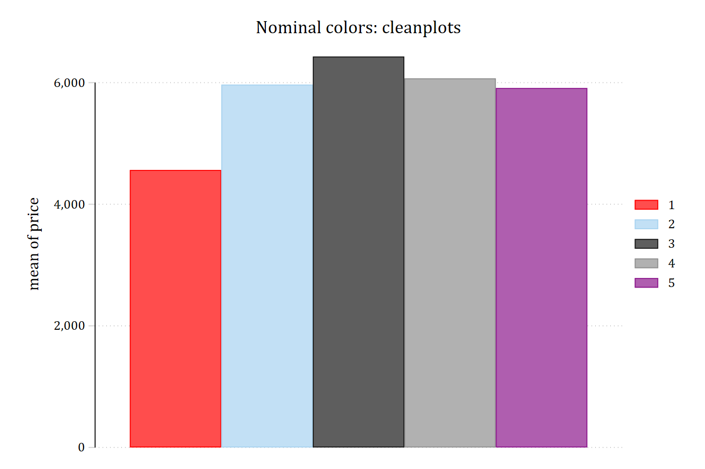
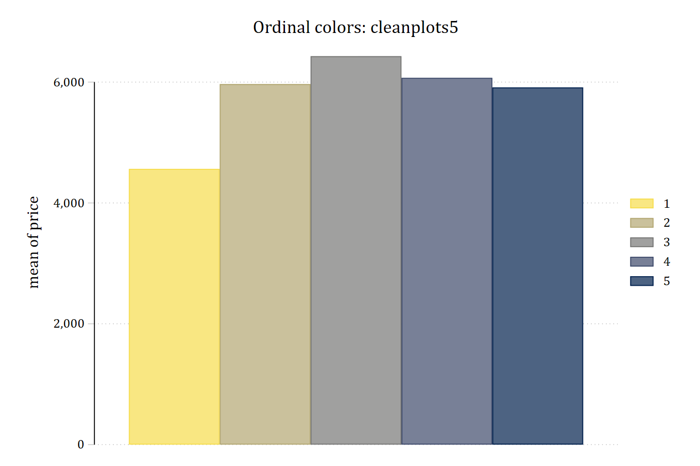

cleanplots
Stata and R graphics schemes for easy and effective data visualizations
cleanplots is a Stata and R graphics scheme that changes the default look of Stata graphics and of R graphics made with ggplot. It is designed to implement data visualization best practices by default – limiting the amount of time you have to spend tweaking a graph to be maximally readable and usable. The color palette is chosen to be colorblind friendly and to work when printed in black and white, so that a single figure will do for both color and grayscale.
This page covers the Stata scheme. The companion R package is documented at tdmize.github.io/cleanplots.
Installation
net install cleanplots, from("https://tdmize.github.io/data") replaceTo make cleanplots the scheme for all of your graphs, permanently:
set scheme cleanplots, permOr apply it to a single graph with the scheme() option:
sysuse auto, clear
graph twoway scatter price weight, scheme(cleanplots)To read the help file in Stata, type help cleanplots; it is also on this site.
Citation
In general, I do not think the use of a graphics scheme requires citation. So for most cases, feel free to use cleanplots without citation. But, if you need or want a citation you can cite cleanplots as:
Mize, Trenton D. 2017. “cleanplots: Stata graphics scheme for easy and effective data visualizations.” https://www.trentonmize.com/software/cleanplots
If you use the ordinal cleanplots# schemes, please also credit the cividis colors (Nunez, Anderton, and Renslow 2018; reference below).
What cleanplots changes
- Default colors are easier to distinguish from each other and are more aesthetically pleasing.
- Default colors are colorblind friendly.
- Default colors allow you to make one graph which is effective in both color and when printed in black and white.
- Nominal and ordinal color palettes are available so your colors match your data.
- Marker shapes and line features (e.g. solid, dashed) better distinguish lines and ensure lines will be distinguishable if printing in black and white.
- All axis markers are horizontal, and thus easier to read.
- A non-invasive light grid is placed on all plots, with both vertical and horizontal gridlines.
- The background of the plot is white.
- Legends are placed to the right of the graph, close to the data.
- Text colors on the graph are consistent.
- Bar charts, area plots, and pie charts automatically use softer versions of the colors, since these elements use far more ink than points and lines.
- And many more.
The Examples page shows six common graphs drawn with cleanplots next to the same graphs in Stata’s default scheme.
The colors
The ten main colors are used, in order, for markers, lines, and confidence intervals. Beyond the first few, distinct marker symbols and line patterns carry most of the work of telling groups apart, since color alone reliably distinguishes about four or five groups. The palette shown with its RGB and hex codes (this and the following palette figures are drawn with Ben Jann’s colorpalette command):
colorpalette #D50000 #8FC6EB #000000 #909090 #740074 #FFB3D9 ///
#143755 #C0C0C0 #404040 #D9D7F0, rows(5) ///
title("cleanplots main color palette" "RGB and Hex codes shown")
graph export "fig/palette-main.png", replace width(1400)(file fig/palette-main.png not found)
file fig/palette-main.png saved as PNG format
Bars, areas, and pies use softer, less saturated versions of the same colors:
colorpalette #FF4D4D #C2E0F5 #5F5F5F #B1B1B1 #AF5FAF #FFDBEE ///
#5D7A93 #D3D3D3 #909090 #E8E7F6, rows(5) ///
title("cleanplots softer color palette for bars and area plots" ///
"RGB and Hex codes shown")
graph export "fig/palette-bars.png", replace width(1400)(file fig/palette-bars.png not found)
file fig/palette-bars.png saved as PNG format
For comparison, the cleanplots colors beside the colors of Stata’s current default scheme (stcolor, since Stata 18) and its previous default (s2color):
colorpalette, span n(10) : cleanplots / st / s2
graph export "fig/palette-compare.png", replace width(1400)(file fig/palette-compare.png not found)
file fig/palette-compare.png saved as PNG format
Color figures convert automatically to grayscale
One benefit of the cleanplots scheme is that you only need to create one set of figures: the colors and the markers, symbols, and lines that cleanplots uses can be printed in black and white or grayscale and still be easily distinguished. The palette alternates darker and lighter colors so that the first several groups differ in lightness alone, and every series also gets its own marker symbol and line pattern. The same palettes as above, in grayscale:
colorpalette, gscale span n(10) : cleanplots / st / s2
graph export "fig/palette-compare-gray.png", replace width(1400)(file fig/palette-compare-gray.png not found)
file fig/palette-compare-gray.png saved as PNG format
A plot of predicted probabilities from an ordinal logit model, in color and as it prints in grayscale; the five outcome categories remain distinguishable by their line patterns and markers:


Creating figures considerate of colorblindness
About 5% of the population has some form of colorblindness, red-green being the most common – which is why you should always avoid having red and green together on a figure. The cleanplots colors were selected because they are easily distinguishable across all types of colorblindness: there is no red-green pair, and the first five colors pass deuteranopia, protanopia, and tritanopia simulation checks. You can check the palette, or any set of colors, interactively at Coloring for Colorblindness.
Ordinal color palettes: cleanplots3 to cleanplots11
The default cleanplots colors are nominal, with no implied ordering. To have the colors reflect ordering, use the cleanplots# schemes on a single graph. Five are available – cleanplots3, cleanplots5, cleanplots7, cleanplots9, and cleanplots11 – where the number is how many sequential colors the scheme provides. The colors run from light yellow to dark navy, so higher categories are darker; they are from the cividis palette, a variant of viridis optimized so that readers with red-green color blindness see essentially the same palette as everyone else, and the ordering survives black and white printing.
colorpalette, span : cleanplots11 / cleanplots9 / cleanplots7 / cleanplots5 / cleanplots3
graph export "fig/palette-ordinal.png", replace width(1400)(file fig/palette-ordinal.png not found)
file fig/palette-ordinal.png saved as PNG format
The same bar chart with the nominal palette and with cleanplots5, which matches the five ordered repair-record categories of Stata’s auto data:
sysuse auto, clear(1978 automobile data)graph bar price, over(rep78) asyvars scheme(cleanplots) ///
title("Nominal colors: cleanplots")
graph export "fig/ordinal-nominal.png", replace width(1400)(file fig/ordinal-nominal.png not found)
file fig/ordinal-nominal.png saved as PNG formatgraph bar price, over(rep78) asyvars scheme(cleanplots5) ///
title("Ordinal colors: cleanplots5")
graph export "fig/ordinal-ordinal.png", replace width(1400)(file fig/ordinal-ordinal.png not found)
file fig/ordinal-ordinal.png saved as PNG format

The cleanplots# schemes inherit all layout, sizing, and legend settings from the main scheme, and each series still gets a distinct line pattern and marker symbol. If a graph has more groups than the scheme has colors, the colors recycle while the patterns and symbols continue to vary.
Version history
cleanplots was given an update in July 2026. For the primary palette, of most focus is the color choices for colors 6–10, which are now more colorblind friendly and more easily distinguishable. And, the intensity of colors now alternates for each odd and even aspect of the graph, aiding in black and white printing. In addition, the cleanplots# schemes now provide options for ordinal palettes. Finally, the legend is now due right of the graph, instead of in the bottom right.
I recommend using the most up to date version. But, if you are feeling nostalgic and want the original scheme, it is preserved as cleanplots_classic:
set scheme cleanplots_classicMany of the features of cleanplots are adapted from the excellent black and white scheme plotplain (Bischof 2017).
R package version
A companion cleanplots package is available for R. It shares this scheme’s colors, marker symbols, line patterns, and layout for ggplot2. Read more about the R package at tdmize.github.io/cleanplots.
References
Bischof, Daniel. 2017. “New Graphic Schemes for Stata: plotplain and plottig.” The Stata Journal 17(3): 748–759.
Nunez, Jamie R., Christopher R. Anderton, and Ryan S. Renslow. 2018. “Optimizing Colormaps with Consideration for Color Vision Deficiency to Enable Accurate Interpretation of Scientific Data.” PLOS ONE 13(7): e0199239.